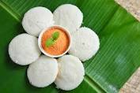

Idly

Description
Idli or idly is a type of savoury rice cake, originating from South India, popular as a breakfast food in Southern India and in Sri Lanka. The cakes are made by steaming a batter consisting of fermented black lentils and rice
Ingredients
- Two cups of Idly rice
- One cup split black gram
- Half teaspoon of fenugreek seeds
- Salt to taste
- Water
Steps
- Soaking
- Rinse the idli and urad dal saperately in water.
- Soak the idli rice and fenugreek seeds together in one bowl, and urad dal in another bowl. Soak them for at least 4-6 hours.
- Grinding
- Grind the urad dal saperately in a wet grinder or mixer-grider until it becomes a smooth and fluffy batter.Add water gradually as needed.
- Grind the soaked rice and fenugreek seeds until you get a smooth batter.The consistentcy should be similar to htat of the urad dal batter
- Mix both batters together in a large bowl,add salt,and mix well.The batter should be thick yet porable
- Fermentation
- Cover the bowl with lid and allow the batter to ferment for about 8-12 hours or overnight.The fermentation time may vary depending on the climate.
Making Idlis
- Greasing the Idli Plates:
- Grease the idli plates with a little oil or ghee to prevent sticking.
- Pouring Batter:
- Mix the fermented batter gently. If it's too thick, you can add a little water to achieve the desired consistency.
- Pour the batter into each mold of the idli plate.
- Steaming:
- Heat water in the idli steamer or a large pot. Place the idli plates in the steamer and steam for about 10-12 minutes or until the idlis are cooked. You can check doneness by inserting a toothpick; it should come out clean.
- Cooling:
- Allow the idlis to cool for a few minutes before removing them from the molds. Use a wet spoon to gently scoop them out.
- Serving:
- Serve the idlis hot with sambar, coconut chutney, tomato chutney, or any other chutney of your choice.
Enjoy your homemade idlis with your favorite accompaniments!